x)
i watched the video: GHIDRA for Reverse Engineering (PicoCTF 2022 #42 'bbbloat')
- ltrace webpage says that: "ltrace intercepts and records dynamic library calls which are called by an executed process and the signals received by that process"
-> in the video: ltrace program says that it exited with code 0
man page says that strace traces system calls and signals.
-> in the video strace gives more information for example mapping memory, functions that are run etc
GHIDRA is a tool that you can use to reverse engineer a binary file. You can see a assembler code and you can also investigate a code and make notes about the mess
-> in the video, he renamed function and investigated if else and got the flag
a) Installed ghidra, my version is 12.0.1
b) downloaded and unzipped packd file
1. created new ghidra project
2. imported packd binary
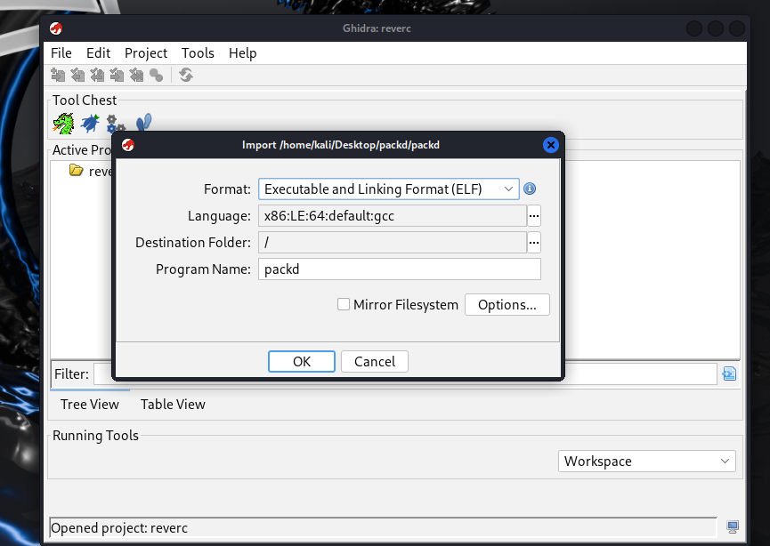
3. opened code browser, yes i want to analyze. Going with default options
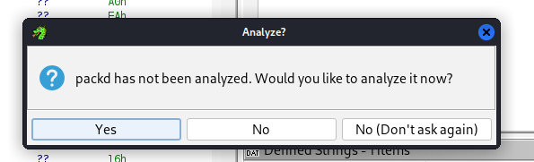
so the program starts with function entry() which is c programming language compiler function and then program goes to main function
references:
https://medium.com/@greg-chapman/reveng-01-finding-main-in-32cdb8e1e9b5
I searched main function with a guide but didn't find it so i try to look at what entry function does
i found entry function in symbol tree
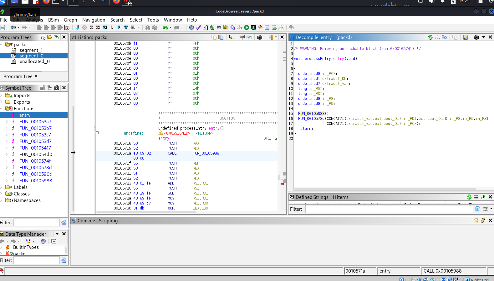
so this code goes to first function
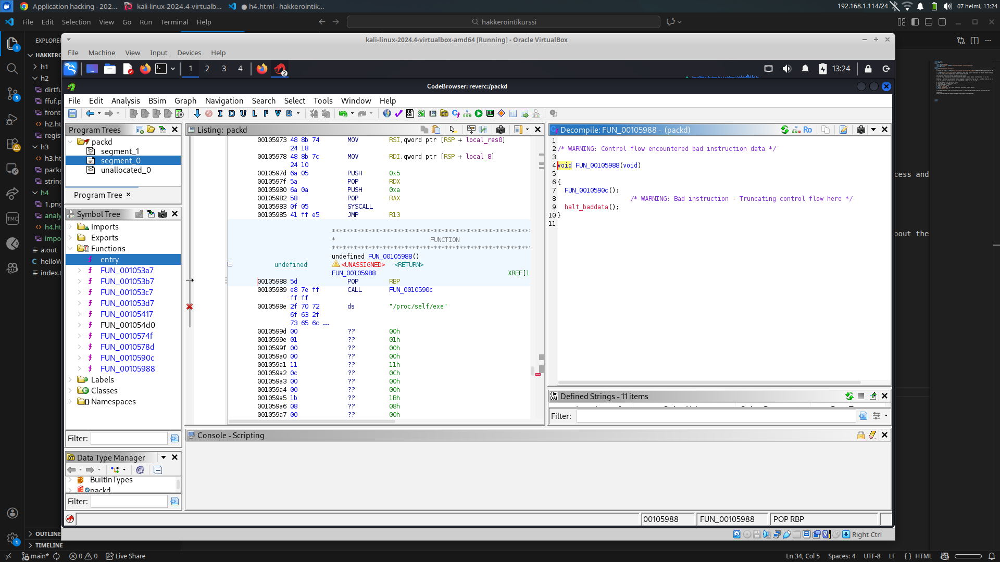
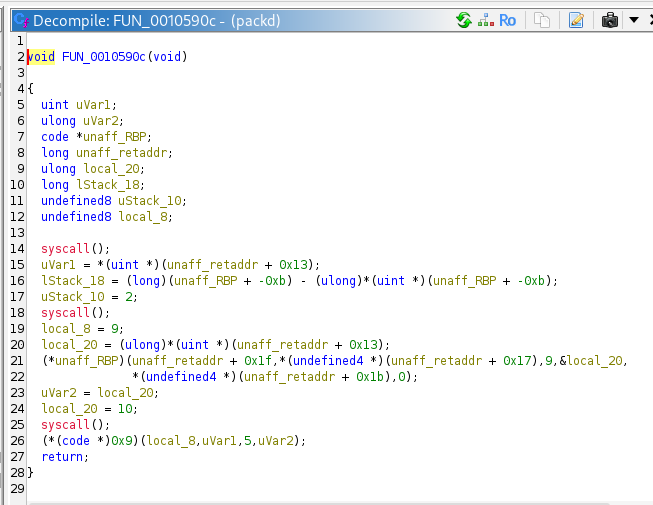
this is definitely not main, code returns also back.
lets go back
so this second func is definitely a main function
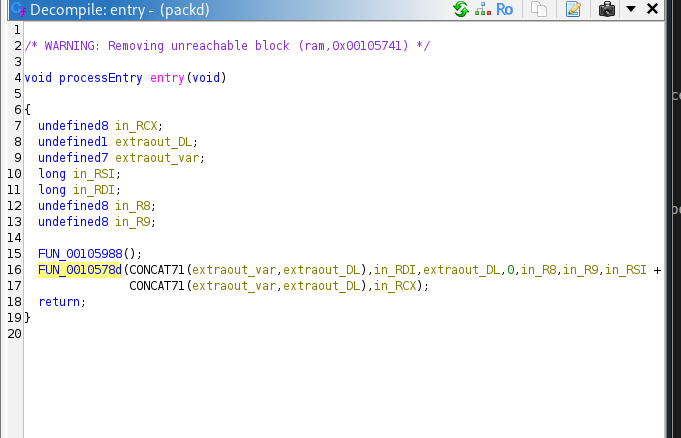
This code is a fully mess so i watched a hint. "did you remember to unpack the packing" no i didn't so lets do that
┌──(kali㉿kali)-[~/Desktop/packd]
└─$ upx -d packd
Ultimate Packer for eXecutables
Copyright (C) 1996 - 2024
UPX 4.2.4 Markus Oberhumer, Laszlo Molnar & John Reiser May 9th 2024
File size Ratio Format Name
-------------------- ------ ----------- -----------
25263 <- 5900 23.35% linux/amd64 packd
Unpacked 1 file.
In ghidra, new file not updated, so i deleted whole file in ghidra and imported it again.
Now i didn't find the entry function but i found the main function. This is definitely a main func
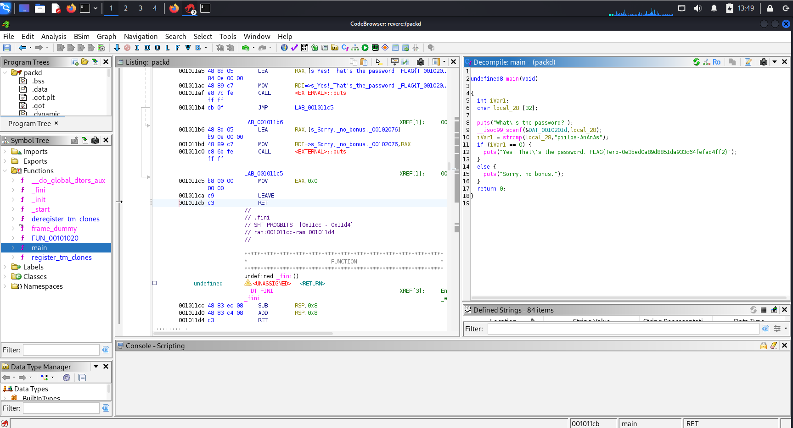
i renamed some functions
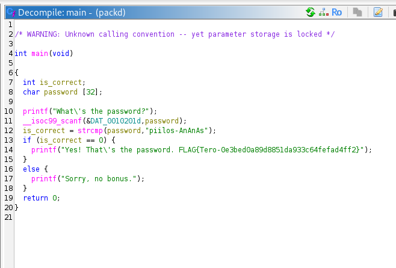
what program does:
1. asks the password
2. if the password is "piilos-ananas" return true if not return false -> store it on the is_correct var
3. if is_correct is true, return the flag
This task is very hard and i spent a lot of time, I figured out the problem was i didn't unpacked the program first. When i unpacked it, it was easier to analyze code.
c) can't got it edited. ghidra decompile tool blocks edits.
d) I downloaded crackmes git clone https://github.com/NoraCodes/crackmes.git
e) make crackme01
lets try to run:
┌──(kali㉿kali)-[~/Desktop/crackmes]
└─$ ./crackme01.64
Need exactly one argument.
┌──(kali㉿kali)-[~/Desktop/crackmes]
└─$ ./crackme01.64 1
No, 1 is not correct.
i used strings
┌──(kali㉿kali)-[~/Desktop/crackmes]
└─$ strings crackme01.64
K4z\
w/lib64/ld-linux-x86-64.so.2
puts
__libc_start_main
__cxa_finalize
printf
strncmp
libc.so.6
GLIBC_2.2.5
GLIBC_2.34
_ITM_deregisterTMCloneTable
__gmon_start__
_ITM_registerTMCloneTable
PTE1
u+UH
Need exactly one argument.
password1
No, %s is not correct.
Yes, %s is correct!
password is definitely password1
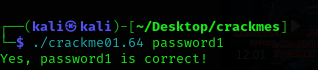
this was easy
e) make crackme01e
i used strings
...
Need exactly one argument.
slm!paas.k
No, %s is not correct.
Yes, %s is correct!
...
lets try that slm!paas.k
┌──(kali㉿kali)-[~/Desktop/crackmes]
└─$ ./crackme01e.64 slm!paas.k
zsh: event not found: paas.k
need to escape this ! to \!
┌──(kali㉿kali)-[~/Desktop/crackmes]
└─$ ./crackme01e.64 slm\!paas.k
Yes, slm!paas.k is correct!
f) make crackme02
i tried looking password with strings
┌──(kali㉿kali)-[~/Desktop/crackmes]
└─$ strings crackme02.64
/lib64/ld-linux-x86-64.so.2
puts
__libc_start_main
__cxa_finalize
printf
libc.so.6
GLIBC_2.2.5
GLIBC_2.34
_ITM_deregisterTMCloneTable
__gmon_start__
_ITM_registerTMCloneTable
PTE1
u+UH
Need exactly one argument.
No, %s is not correct.
password1
Yes, %s is correct!
password1 not worked so i opened the project in ghidra
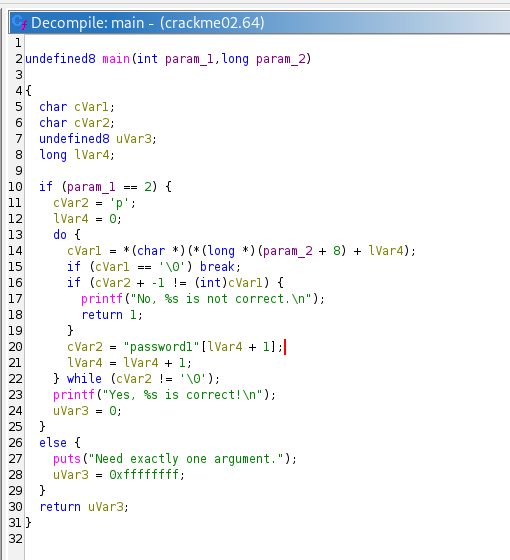
this is the source code:
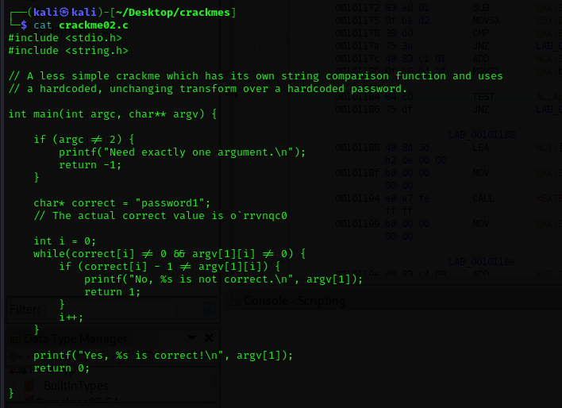
i dont understand why password1 not worked
too hard, i spent lot of time. So i skip this task